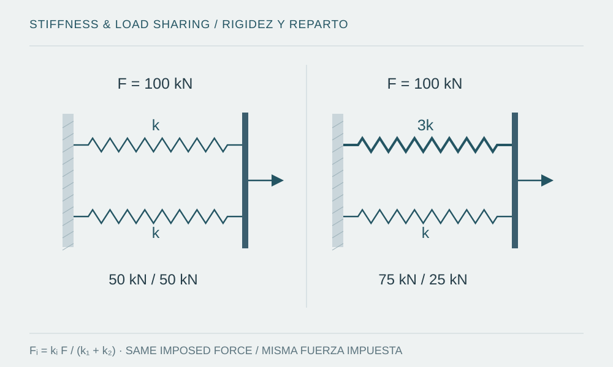

Un refuerzo local modifica la estructura completa. La elección entre encamisado, FRP o nuevos elementos depende del mecanismo y de la evidencia disponible.

Procedencia de la figura
- Fuente
- Ilustración vectorial original preparada para esta nota.
- Herramienta
- SVG
- Fecha
- 2026-10-08
- Descripción
- Comparación conceptual de dos elementos resistentes en paralelo, mostrando cómo cambia el reparto de fuerza al modificar una rigidez.
- Condición de uso
- Esquema educativo original; no es una captura de software ni evidencia de un proyecto.
Introducción
Una intervención no debería comenzar seleccionando un material de refuerzo. Primero se necesita explicar qué deficiencia existe, por qué importa y qué mejora se busca. Pérdida de sección, capacidad de deformación insuficiente, discontinuidad resistente y deterioro del sustrato son problemas distintos. Una técnica eficaz para uno puede resultar irrelevante para otro o trasladar la demanda a un componente que no se había revisado.
El problema: conocer lo construido
La evaluación debe distinguir información documentada, observada, ensayada e inferida. Planos originales, cambios de uso, reparaciones anteriores, geometrías medidas y estado de materiales alimentan un modelo con incertidumbre explícita. Una resistencia obtenida de un documento de diseño no equivale automáticamente a una propiedad confirmada de la estructura existente.
ASCE/SEI 41-23 organiza la evaluación y rehabilitación sísmica mediante objetivos de desempeño y niveles de evaluación [1]. ACI CODE-562-25 aborda la evaluación, reparación y rehabilitación del concreto existente [2]. Son referencias con alcances diferentes: se debe establecer el marco aplicable, sin trasladar requisitos de obra nueva a una evaluación por simple analogía.
Desarrollo: del mecanismo a la alternativa
El diagnóstico debe localizar la limitación: resistencia, estabilidad, deformación, transferencia entre piezas o durabilidad. Después se comparan alternativas según el objetivo y la secuencia de ejecución. Un encamisado puede modificar dimensiones, rigidez y transmisión de esfuerzos; nuevos muros o arriostres cambian la distribución global. Por ello también se revisan diafragmas, conexiones y fundaciones.
Un sistema FRP puede contribuir a mecanismos específicos de fortalecimiento o confinamiento, pero requiere identificar orientación, anclaje, adherencia, estado del concreto y exposición. ACI PRC-440.2-23 es una guía para sistemas FRP externamente adheridos [3]; su existencia no convierte cualquier envoltura en una solución válida. La mejora de resistencia no implica automáticamente recuperar rigidez inicial ni resolver la corrosión.
En acero existente, AISC 342-22 proporciona un marco especializado de evaluación y rehabilitación sísmica [4]. En cualquier material deben examinarse mecanismos frágiles y compatibilidad de deformaciones. La capacidad del elemento intervenido sirve de poco si la unión o el apoyo no pueden recibir la demanda resultante.
Ejemplo conceptual: reforzar redistribuye
Se idealiza un piso con dos sistemas laterales en paralelo y un diafragma rígido sin torsión. Si ambos tienen rigidez k y la fuerza horizontal impuesta es 100 kN, cada uno recibe 50 kN. Al cambiar únicamente la rigidez del primero a 3k, el reparto pasa a 75 kN y 25 kN.
El cálculo muestra compatibilidad de desplazamientos y equilibrio, no eficacia de una intervención real. Se ha mantenido artificialmente la misma fuerza total: en un análisis sísmico, cambiar rigidez también puede modificar periodos y demanda. Antes de concluir que el refuerzo es favorable habría que revisar resistencia, deformaciones, conexiones y cimentaciones bajo la nueva respuesta.
Leer el alcance antes de cambiar la referencia FRP
ACI PRC-440.2-23 declara que sustituye a la guía ACI 440.2R-17 [5]. Por separado, ACI CODE-440.13-24 establece requisitos para refuerzo con FRP y delimita su aplicación: SDC A o miembros fuera del sistema sismorresistente [6]. No representa una sustitución universal de la guía para cualquier intervención sísmica.
El registro de una evaluación debe identificar qué documento se emplea, para qué mecanismo y con qué objetivo. Una hoja automatizada puede organizar geometría y demandas; seleccionar propiedades, anclajes y criterios de aceptación requiere evidencia del elemento existente y una revisión del sistema.
Errores habituales
- Definir la solución antes de registrar daños, materiales, geometría y objetivo de desempeño.
- Comparar solo capacidades nominales y omitir la redistribución o los estados durante ejecución.
- Suponer que todos los datos del modelo tienen el mismo nivel de certeza.
- Presentar una reducción de demanda en un elemento como mejora global sin revisar dónde se transfirió.
Conclusión y alcance
La propuesta debe enlazar evidencia, diagnóstico, objetivo, alternativa y verificación, con un registro de incertidumbres y una estrategia de control durante ejecución. Una revisión final comprueba el conjunto intervenido y su compatibilidad, no solo la pieza reforzada. Ejemplo educativo original; referencias ASCE 41-23, ACI 562-25, ACI PRC-440.2-23 y AISC 342-22 revisadas el 8 de octubre de 2026.
Fuentes y referencias
- ASCE/SEI 41-23 — Seismic Evaluation and Retrofit of Existing Buildings (2023), presentación oficial
Presentación oficial de la edición 2023. El texto completo y su adopción deben consultarse para establecer objetivos y criterios específicos.
- ACI CODE-562-25 — Assessment, Repair, and Rehabilitation of Existing Concrete Structures (2025), ficha y alcance oficiales
Ficha oficial de la edición 2025 para concreto existente. La nota distingue su alcance del de la evaluación sísmica de edificios.
- ACI PRC-440.2-23 — Design and Construction of Externally Bonded FRP Systems for Strengthening Concrete Structures, Guide (2023)
Guía de 2023 para sistemas FRP adheridos externamente. Su condición de guía y sus límites de aplicación deben mantenerse explícitos.
- ANSI/AISC 342-22 — Seismic Provisions for Evaluation and Retrofit of Existing Structural Steel Buildings (2022)
Edición 2022 para evaluación y reforzamiento sísmico de estructuras de acero existentes; su adopción depende de la base de evaluación.
- ACI PRC-440.2-23 — Vista previa oficial: sustitución de ACI 440.2R-17 (2023)
La página inicial declara expresamente la sustitución de la guía de 2017. Consultado el 8 de octubre de 2026.
- ACI CODE-440.13-24 — Strengthening Structural Concrete with FRP Systems (2024), vista previa oficial
Alcance 1.1 y 1.2.2; el comentario R1.2.2 distingue el reforzamiento del sistema sismorresistente en SDC B–F.